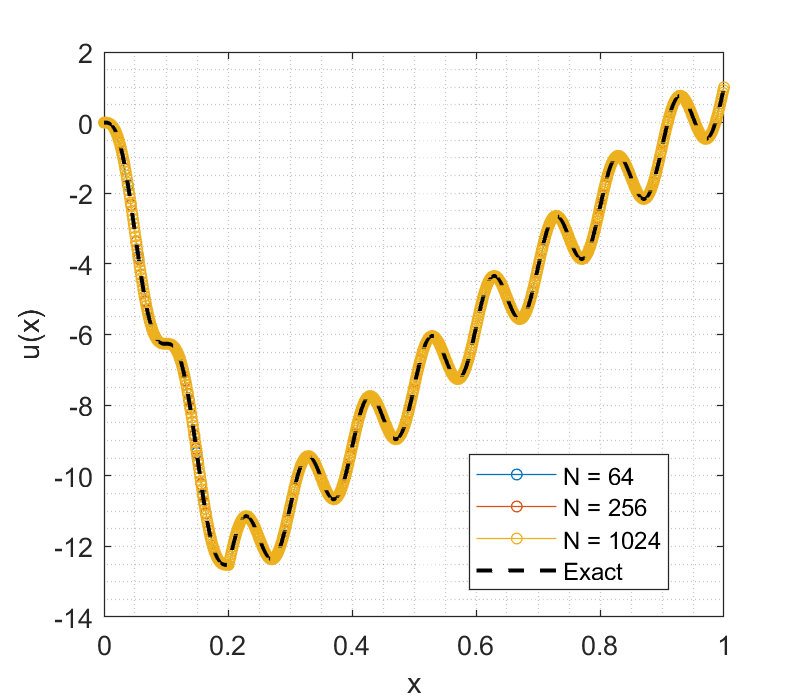
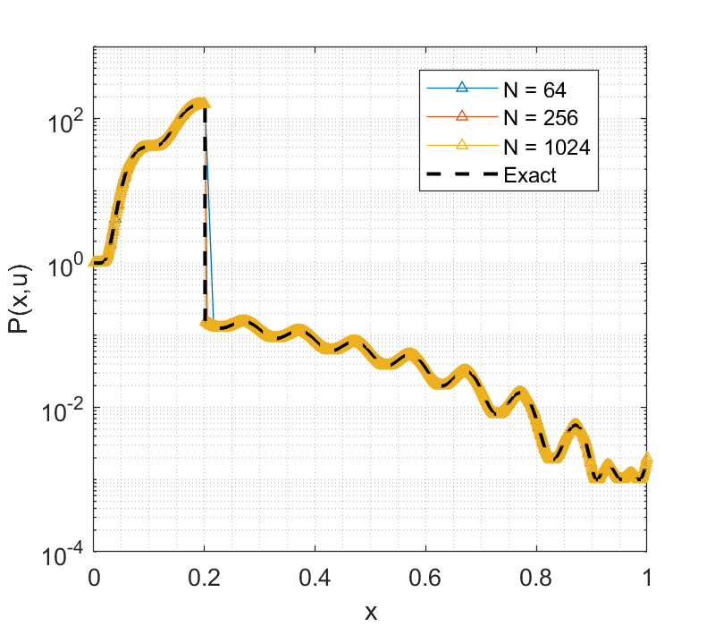
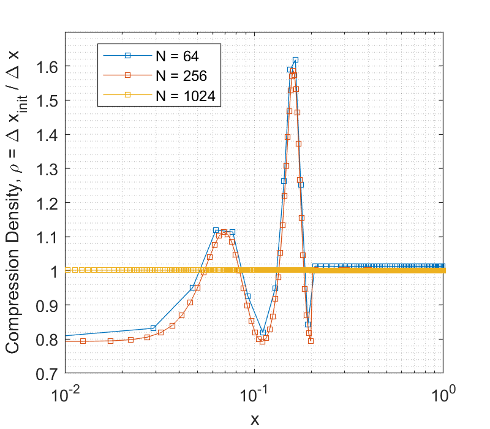
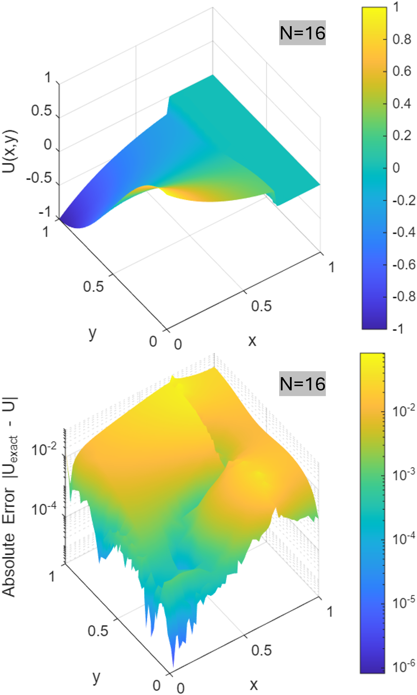
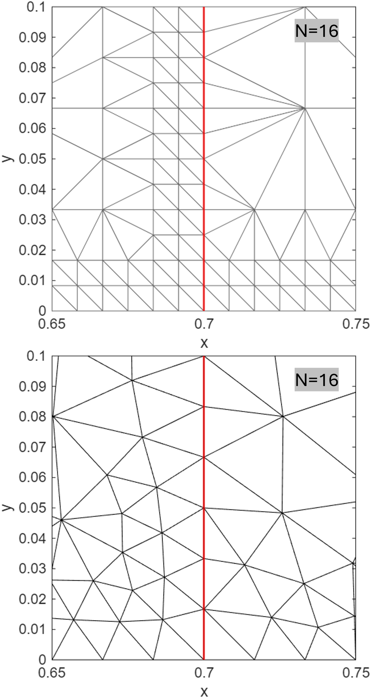
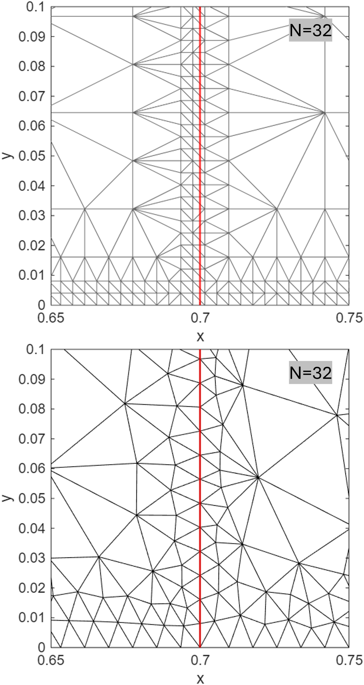

CHAPTER 4
4. 수치적 실험 및 검증
알고리즘의 대수적 제어 성능과 수치적 이산화 차수를 평가하기 위해, 본 장에서는 제조해 기법(Method of Manufactured Solutions, MMS)을 활용하여 방정식 우변의 강제 소스항 $Q(x)$를 역산하여 도출한다. 해석적 정해가 존재하지 않거나 매질 불연속성이 뚜렷한 편미분 방정식의 수치 검증에 주로 도입되는 MMS는, 이산화 오차의 누적 및 구현상의 논리적 결함을 독립적으로 식별하는 유효한 검증 수단으로 작용한다. 본 연구는 이를 통해 대수적 정화기가 작동하는 조건에서도 유한체적법(Finite Volume Method, FVM) 고유의 $\mathcal{O}(\Delta x^2)$ 이론적 점근 수렴성이 일관되게 달성됨을 정량적으로 확인한다.
최근 수치해석 분야에서는 JAX나 PyTorch와 같은 자동 미분(automatic differentiation) 라이브러리를 활용하여 연산 효율과 구현 편의를 도모하는 사례가 활용되고 있다. 그러나 본 연구에서 제안하는 대수적 보정 기법은 비선형 연산자의 조립 단계부터 반대칭 성분 추출에 이르는 명시적인 대수적 제어(algebraic control)를 포함한다. 이에 따라 알고리즘의 제어 계층(control layer)과 선형대수 연산 계층(linear algebra layer)을 분리하여 64-bit double precision 환경에서 구현하였으며, 범용 자동 미분 라이브러리나 상용 PDE 패키지는 배제하였다. 본 수치 기법을 구성하는 세부 알고리즘 및 기하-대수적 제어 절차는 다음과 같다.
격자 이동 제어 단계에서는 3.1절에서 도출된 이산 공간 국소 비대칭 지표 $S_{kj}$를 기반으로 $r$-적응형(r-adaptive) 격자 이동을 수행한다. 오차가 발생하는 구역의 기하학적 특성을 가중치 행렬 $\hat{W}$에 반영하고, 이를 바탕으로 그래프 라플라시안(Graph Laplacian) 시스템을 구성하여 조화 사상(harmonic mapping) 방정식을 산출한다. 이 과정에서 계면 인접 노드의 자동 스내핑(auto-snapping)을 적용하여, 물성 계면이 단일 요소(element)를 관통할 때 발생하는 조화 평균 역설(harmonic mean paradox) 및 대수 왜곡을 방지한다. 이산 노드가 물리적 계면으로부터 요소 길이의 절반 미만 거리로 접근할 경우 해당 노드의 좌표를 계면 위치로 조정한다. 이를 통해 요소 내부의 킹크(kink) 발생을 억제하고, 초기 격자망이 계면과 우연히 일치하여 오차가 상쇄되는 현상(accidental error cancellation)을 통제한다.
격자 재배치 과정에서 발생하는 기하학적 변형에 의한 잔여항(residual) 증가를 제어하기 위해, 최적 상태 복원(optimal state rollback) 기법을 적용하였다. 매 반복 단계에서 비선형 잔여항의 노름(norm)을 계산하고, 최소 오차를 나타내는 기하 좌표와 상태 변수를 저장한다. 격자 이동 후 오차가 증가할 경우 시스템을 이전 상태로 복구하고 격자의 위상 변형을 동결(mesh freezing)하여 점근적 수렴성을 유도한다. 비선형 잔차($R$) 및 프레셰 도함수(Fréchet derivative, $\hat{J}$)의 조립은 해석적(analytical) 미분 법칙에 기반한다. 공간 적분은 1차원 도메인에서 다점 가우스-르장드르 구적법(multi-point Gauss-Legendre quadrature)을, 2차원 비구조적 격자계에서는 간선 중점 평가(edge-midpoint evaluation)를 적용하였다.
대수적 정규화 단계에서는 3.2절의 수반 일관성(adjoint consistency) 조건을 만족하도록 내부 레지듀를 최소화하는 대각 정규화 행렬 $\hat{C}$를 최소자승법(least squares)으로 산출한다. 또한 디리클레 경계 조건이 내부 노드의 연산자 구조에 미치는 영향을 통제하기 위해, 사영 연산자(projection operator) 형태의 마스크 행렬 $\hat{M}_s$를 적용한다. 이를 바탕으로 2.4절의 벌크-경계 소산 정리를 이용해 시스템의 비대칭성으로부터 내부 수치적 반대칭 성분($\hat{A}_{int}$)을 분리하고, 이를 원시 자코비안에서 감산하여 보정된 자코비안($\hat{J}_{pure}$)을 구성한다. 선형 시스템의 연산에는 CSC(Compressed Sparse Column) 희소 행렬 포맷을 활용하였으며, 선형 연립방정식($\hat{J}_{pure} \delta u = -R$)의 풀이에는 UMFPACK 기반 직접 희소 해법(direct sparse solver)을 적용하였다. 자코비안의 조건수(condition number) 산출에는 1-노름 기반 조건수 추정 기법을 이용하였다. 본 장의 모든 수치 실험 표에서 제시되는 보정된 조건수 $\text{Cond}(CJ)$는 기하학적 메트릭 적용 및 수치적 반대칭 성분 분리 절차를 거쳐 최종 구성된 선형 해법의 탐색 행렬 $\hat{J}{pure}$에 대한 조건수 $\kappa(\hat{J}{pure})$를 의미한다.
4.1 1차원 특이 섭동 시스템의 대수적 무결성 검증
무차원 유클리드 1차원 도메인 $\Omega = [0, 1]$ 상에서, 상태 종속적 비선형 확산 계수 $P(u, x)$를 가지는 강타원형(strongly elliptic) 보존 방정식은 다음과 같이 정의된다.
$$ \frac{d}{dx} \left( P(u, x) \frac{du}{dx} \right) = Q(x) \quad \text{in } \Omega $$유한체적법으로 이산화된 시스템의 수치적 강성(stiffness)을 유도하기 위해, 도메인을 계면 $x_{int} = 0.2$ 위치를 기준으로 좌측 매질과 우측 매질로 분할하며, 확산 계수 $P(u, x)$에 불연속성을 부여한다. 계면을 비대칭적 위치에 설정한 것은 초기 균일 격자망이 계면과 일치하여 보간 오차가 인위적으로 상쇄되는 기하학적 우연성(lucky alignment)을 통제하기 위함이다. 우측 매질에는 투과율 단차 계수 $\sigma$가 적용된다.
$$ P(u, x) = \begin{cases} 1 + u^2 & \text{if } x \le x_{int} \\ \sigma (1 + u^2) & \text{if } x > x_{int} \end{cases} $$제조해 기법(MMS)에 적용할 해석적 정해 $u_{exact}(x)$는 각속도 $k = 2\pi f$를 가지는 정현파(sinusoidal wave)를 기저 함수로 하여 다음과 같이 구성된다.
$$ u_{exact}(x) = \begin{cases} \sin(k x) + C_L x & \text{if } x \le x_{int} \\ \sin(k x) + C_R (x - 1) + U_{end} & \text{if } x > x_{int} \end{cases} $$여기서 1차 계수 $C_L$과 $C_R$은 계면 $x_{int}$에서의 전위 연속성($u_L = u_R$)과 검사 체적 간의 엄밀한 비선형 플럭스 연속성($P_L u_L' = P_R u_R'$)을 항등적으로 만족하도록 산출된 상수이며, 우측 종단($x=1$)의 목표 전위는 $U_{end} = 1.0$으로 고정된다.
대수적 정화 알고리즘의 성능을 평가하기 위해 우측 종단($x=1$)에 비대칭 로빈 혼합 경계 조건($\alpha=2.0, \beta=1.0$, $\alpha u + \beta J = \gamma$)을 부과한다. 이는 자코비안 행렬 구축 과정에서 대각 지배성(diagonal dominance)을 저하시키고, 2장에서 분석된 대류 잔차에 의한 비정규성을 시스템 전반으로 확산시키는 역할을 수행한다.
1) Case A: 공간 분해능 확장에 따른 점근적 수렴성 증명 (Varying $N$)



Table 1: Relative error statistics and algebraic condition number stabilization for the r-adapted solutions across increasing spatial resolutions $N$ (Control parameters: $\sigma=10^{-3}, f=10.0$).
| N | L2 Error | Max Error | Raw Asymmetry | Treated Asym | Cond(J) | Cond(CJ) | Stabilization |
|---|---|---|---|---|---|---|---|
| 32 | 3.4549e-01 | 1.3116e+00 | 5.4299e+00 | 2.7285e-12 | 8.3301e+08 | 7.2358e+06 | 115.1 x |
| 64 | 9.7855e-05 | 5.6426e-04 | 2.3634e+00 | 3.6380e-11 | 2.8506e+09 | 2.8233e+07 | 101.0 x |
| 128 | 3.3071e-06 | 1.5701e-05 | 4.4337e+00 | 5.8208e-11 | 1.1737e+10 | 1.1470e+08 | 102.3 x |
| 256 | 5.2587e-08 | 2.5664e-07 | 8.7207e+00 | 3.2014e-10 | 4.8123e+10 | 4.5707e+08 | 105.3 x |
| 512 | 8.0688e-10 | 3.9522e-09 | 1.7467e+01 | 1.5134e-09 | 1.9457e+11 | 1.8354e+09 | 106.0 x |
| 1024 | 2.6417e-12 | 1.3726e-11 | 4.5867e+01 | 4.0745e-09 | 7.4929e+11 | 5.9766e+09 | 125.4 x |
| 2048 | 4.8565e-14 | 2.2263e-13 | 9.1750e+01 | 1.5134e-08 | 2.9987e+12 | 2.3906e+10 | 125.4 x |
| 4096 | 6.4140e-14 | 2.2971e-13 | 1.8330e+02 | 3.4925e-08 | 1.1981e+13 | 9.5508e+10 | 125.4 x |
첫 번째 실험은 통제 조건($\sigma=10^{-3}, f=10.0$) 하에서 검사 체적의 분해능 $N$을 $32$에서 $4096$까지 배수로 증가시키며, 이산화 차수와 대수적 정화 기법의 조건수 제어 성능을 분석한다.
표 1의 지표를 분석하면, 유한체적법의 셀 중심 기준 $L_2$ 전역 누적 오차는 초기 조대 격자($N=32$)에서 $3.45 \times 10^{-1}$ 수준이나, $N=64$ 단계에서 $9.78 \times 10^{-5}$로 급격히 감소한다. 이는 고주파 파동($f=10.0$)의 나이퀴스트 표본화(Nyquist sampling) 한계를 돌파하며 해상도가 확보되는 사전 점근(pre-asymptotic) 구간의 특징이다. 이후 $N=1024$까지 오차가 하강하며, $N \ge 2048$ 구간에서는 절단 오차가 배정도(double-precision) 부동소수점 연산 한계인 $\mathcal{O}(10^{-14})$ 대역에 도달하여 수렴이 정체되나 수치적 발산 없이 안정적인 오차를 유지한다.
주목할 점은 원시 자코비안의 스펙트럼 특성이다. 시스템의 원시 비대칭성(Raw Asymmetry) 지표는 $N=64$에서 $2.36$으로 최소화된 이후, 격자 해상도가 2배씩 증가함에 따라 약 2배 단위로 선형적인 증가 추세($\mathcal{O}(\Delta x^{-1})$)를 보이며 $N=4096$에서 $1.83 \times 10^2$에 도달한다. 이는 2장에서 기술된 바와 같이, 격자 간격이 세밀해짐에 따라 1계 대류 연산자의 이산 표상이 확대되어 행렬의 비정규성(non-normality)이 가중된 결과이다. 이에 따라 원시 자코비안의 조건수(Cond(J) Raw)는 $8.33 \times 10^8$에서 $1.19 \times 10^{13}$까지 $\mathcal{O}(\Delta x^{-2})$ 스케일로 상승하며 대수적 악조건을 악화시킨다. 반면, 3.2절의 이산 헬름홀츠-호지 분해(DHHD) 기반 대수적 투영을 적용한 경우, 잔류 비대칭 지표(Treated Asym)는 $\mathcal{O}(10^{-8}) \sim \mathcal{O}(10^{-12})$ 대역으로 제한되었다. 이는 유한체적법의 계면 플럭스 불균형에서 기인하는 교차 결합 성분 $\hat{A}{int}$가 탐색 행렬 $\hat{J}{pure}$로부터 대수적으로 분리되었음을 의미한다. 결과적으로 고해상도 한계 조건에서도 약 $125.4$배의 일관된 조건수 안정화 비율이 관측되었으며, 뉴턴 반복법의 선형 수렴성이 일관되게 보존됨을 확인하였다.
그림 1(c)에 도식된 검사 체적 압축 밀도 $\rho(x) = \Delta x_{init} / \Delta x$의 공간적 분포는, 조대 격자 및 중간 해상도 구간($32 \le N \le 512$)에서 투과율이 높은 좌측 매질($x \le 0.2$) 내 고주파 파동의 국소 구배에 대응하여 격자 밀집도가 변동함을 보여준다. 반면 투과율 단차($\sigma=10^{-3}$)로 인해 유효 속도장 발산이 제한되는 우측 매질($x > 0.2$) 구간에서는 텐션 지표의 영향이 감소하여 밀집도가 일정하게 유지된다. 격자 해상도가 $N \ge 1024$ 이상으로 확장되면, 기본 이산화 간격이 파동의 구배와 계면 불연속성의 이산 교환자 오차를 스스로 해석할 수 있는 기하학적 분해능을 확보하게 된다. 이에 따라 국소 텐션이 도메인 전역에서 최소화되며 격자망 전체가 점근적 균일 상태(asymptotically uniform state)로 전이됨을 확인할 수 있다.
2) Case B: 매질 불연속성 변화에 따른 자코비안 대수적 안정성 검증 (Varying $\sigma$)
Table 2: Algebraic robustness indicators and relative error statistics under varying permeability contrast $\sigma$, demonstrating the suppression of spurious non-normality at material interfaces (Control parameters: $N=256, f=10.0$).
| Sigma | L2 Error | Max Error | Raw Asymmetry | Treated Asym | Cond(J) | Cond(CJ) | Stabilization |
|---|---|---|---|---|---|---|---|
| 1.0e-0 | 1.4316e-10 | 6.4240e-10 | 7.1925e+02 | 5.9117e-12 | 6.3281e+06 | 2.4651e+06 | 2.6 x |
| 1.0e-1 | 3.6596e-16 | 8.8818e-16 | 8.3734e+02 | 5.6843e-13 | 7.1949e+06 | 5.3237e+06 | 1.4 x |
| 1.0e-2 | 2.0606e-16 | 7.7716e-16 | 8.4983e+02 | 3.9790e-13 | 5.1846e+07 | 4.0170e+07 | 1.3 x |
| 1.0e-3 | 2.2195e-16 | 5.9674e-16 | 5.4430e+02 | 3.4106e-13 | 5.1598e+08 | 4.4068e+08 | 1.2 x |
두 번째 시나리오는 파동 주파수($f=10.0$)와 격자 수($N=256$)를 고정한 상태에서 투과율 단차 계수 $\sigma$를 $10^{-1}$에서 $10^{-4}$까지 감소시키며, 프레셰 도함수에 유발되는 대수적 왜곡과 이에 대한 대수적 보정 알고리즘의 안정화 효과를 측정한다.
매질 단차가 $\sigma = 10^{-3}$으로 증가함에 따라 원시 자코비안의 조건수는 $6.32 \times 10^6$에서 $5.15 \times 10^8$로 상승한다. 본 조건에서 관찰되는 안정화 배율(Stabilization)은 $1.2 \sim 2.6$ 수준으로 상대적으로 낮게 나타나나, 잔류 비대칭성(Treated Asym)이 $\mathcal{O}(10^{-12}) \sim \mathcal{O}(10^{-13})$ 대역으로 제어됨에 주목해야 한다. 이는 3.4절에서 명시된 바와 같이, 대수적 보정 과정의 주된 목적이 단순한 스칼라 스케일링(scaling)이 아니라 수치 소산의 대수적 근원인 교차 대칭성 감소를 보정하는 데 있음을 시사한다.
또한, $\sigma \le 10^{-1}$ 구간에서 $L_2$ 및 $L_\infty$ 오차가 $\mathcal{O}(10^{-16})$ 대역의 기계 정밀도(machine precision)에 수렴한다. 계면 인접 노드의 자동 스내핑(auto-snapping)이 적용된 이산 공간에서 도출된 이 결과는, 제안된 기하학적 맵핑과 대수적 투영 기법이 유한체적법 계면에서의 이산 교환자 오차(discrete commutator error)를 수학적으로 상쇄함을 보여준다.
3) Case C: 고주파 특이 곡률 확장에 따른 위상 적응 및 대수 제어 검증 (Varying $f$)
Table 3: Algebraic and numerical integrity metrics as a function of the wave frequency $f$, demonstrating the exponential growth of the stabilization factor under severe geometric tension (Control parameters: $N=256, \sigma=10^{-2}$).
| f | L2 Error | Max Error | Raw Asymmetry | Treated Asym | Cond(J) [원시] | Cond(CJ) [보정] | Stabilization |
|---|---|---|---|---|---|---|---|
| 1.0 | 2.6590e-14 | 5.7926e-14 | 2.1126e+02 | 5.6843e-14 | 3.2104e+06 | 2.4886e+06 | 1.3 x |
| 5.0 | 1.8283e-10 | 7.6680e-10 | 3.8471e+01 | 8.7311e-11 | 8.8909e+08 | 2.3659e+07 | 37.6 x |
| 10.0 | 9.1049e-09 | 4.4365e-08 | 1.1635e+01 | 2.3283e-10 | 5.0183e+09 | 4.0027e+07 | 125.4 x |
| 20.0 | 1.7316e-06 | 1.4969e-05 | 2.4254e+00 | 1.6298e-09 | 3.2588e+10 | 8.1369e+07 | 400.5 x |
세 번째 시나리오는 분해능($N=256$)과 투과율 단차($\sigma=10^{-2}$)를 고정한 상태에서, 파동 주파수($f$)를 $1.0$에서 $20.0$까지 증가시키며 국소적 곡률 증가가 유발하는 기하-대수적 상호작용을 분석한다.
파동 주파수 $f$가 상승함에 따라 상태 변수의 곡률이 증가하며, 이산화 시 공간 도함수를 평가하기 위한 국소 구배가 상승한다. 주파수 증가 시 원시 비대칭성 지표는 $211.26$에서 $2.42$로 감소한다. 이는 고주파 대역에서 2계 타원형 미분 연산자(확산항)가 1계 이류 연산자(대류항)를 수치적으로 지배함에 따라 발생하는 거동이다.
비대칭성의 감소에도 불구하고 원시 자코비안의 조건수는 $f=20.0$ 조건에서 $3.25 \times 10^{10}$으로 크게 증가한다. 이는 $r$-적응형 엔진이 오차 구배에 대응하여 노드 좌표를 국소적으로 집중시킴에 따라 격자 간격 편차가 심화된 데 기인한다. 그러나 대수적 전제조건화 절차가 적용된 시스템은 보정된 자코비안의 조건수를 $8.13 \times 10^7$ 수준으로 억제하며 안정화 배율을 $400.5$배까지 상승시켰다. 이 결과는 부록 B에서 증명된 전제조건화된 연산자의 스펙트럼 상한($|\lambda - 1| \le \gamma_{int}$)이 위상 변형(mesh deformation)이 수반되는 상황에서도 유효하게 작동함을 뒷받침한다.
4.2 2차원 특이 섭동 시스템의 대수적 무결성 검증
1차원 공간에서의 검증을 확장하여, 본 절에서는 면적 벡터(area vector) 방향의 교차 미분항(cross-derivative)이 수반되며 기하학적 자유도가 높은 2차원 비구조적 삼각 격자계(unstructured triangular mesh)를 대상으로 제안된 대수적 정화 기법을 검증한다. 2차원 도메인 $\Omega = [0, 1] \times [0, 1]$ 상에서 정의되는 비선형 타원형 편미분 방정식은 다음과 같다.
$$ \nabla \cdot \left( P(u) \nabla u \right) = Q(x, y) \quad \text{in } \Omega $$비정규성(non-normality)을 대수적으로 유도하기 위해 지수 함수 형태의 비선형 확산 계수 $P(u) = \exp(k_{nl} u)$를 도입한다. 도메인은 수직 계면 $x_{int} = 0.7$을 기준으로 좌측 매질과 우측 매질로 분할되며, 우측 매질에는 투과율 단차 계수 $\sigma$가 적용된다.
$$ P(u, x, y) = \begin{cases} \exp(k_{nl} u) & \text{if } x \le x_{int} \\ \sigma \exp(k_{nl} u) & \text{if } x > x_{int} \end{cases} $$제조해 기법(MMS)의 해석적 정해로는 다음과 같은 2차원 지수 감쇠 모델을 적용하였다.
$$ u_{exact}(x, y) = \begin{cases} U_0 \exp(-\alpha_L x) \cos(\pi y) & \text{if } x \le x_{int} \\ U_0 \exp(-\alpha_L x_{int}) \exp(-\alpha_R (x - x_{int})) \cos(\pi y) & \text{if } x > x_{int} \end{cases} $$기준 진폭을 $U_0 = 1.0$, 좌측 매질의 감쇠율을 $\alpha_L = 2.0$으로 상정할 때, 우측 매질의 감쇠율 $\alpha_R$은 계면에서의 비선형 유량 보존 법칙($P_L \nabla u_L \cdot \mathbf{n} = P_R \nabla u_R \cdot \mathbf{n}$)에 의해 결정된다. 연속 조건($u_L = u_R$)에 의해 지수 비선형 항이 소거되므로, 우측 감쇠율은 투과율 단차에 반비례하는 $\alpha_R = \alpha_L / \sigma$ 로 산출된다. 우측 및 상단 경계에는 비대칭 로빈 혼합 조건($\alpha=2.0, \beta=1.0$)을 부과하여 시스템 전반의 교차 결합(cross-coupling) 비대칭성을 확산시켰다.
본 2차원 검증에서는 직교 초기 격자망을 기반으로, 물리적 계면($x=0.7$)을 포함하는 요소와 외각 경계면을 탐지하여 재귀적인 사분트리 공간 미세화(Quadtree h-refinement)를 수행하였다. 직교 초기 격자망에 대해 계면을 포함하는 요소를 4개의 하위 요소로 분할하는 사분트리 공간 미세화(Quadtree h-refinement)를 3단계 깊이로 수행한다. 이는 계면 인접 요소의 1차원 간선 길이를 초기 대비 $1/8$ 수준으로, 2차원 면적을 $1/64$ 크기로 세분화하는 과정이다. 이를 통해 계면 부근의 기하학적 분해능을 집중적으로 확보하며, 들로네 단체 변환(Delaunay Simplex Conversion)을 거쳐 매달린 노드(hanging node)가 없는 비구조적 삼각망을 조립한다. 이를 해소하기 위해, 국소 간선 길이의 49% 이내에 위치한 비정합 노드들을 계면 좌표로 이동(snapping)시키는 위상 제어를 연이어 수행한다. 이 과정에서 삼각형 요소의 면적 행렬식을 검사하여, 절점이 이동할 경우 요소가 뒤집히거나 면적이 음수가 되는 위상 역전(element inversion) 발생 노드는 이동을 기각함으로써 들로네(Delaunay) 삼각망의 기하학적 정칙성을 보존한다.
1) Case A: 공간 분해능 확장에 따른 점근적 수렴성 증명 (Varying $N$)




Table 4: 2D algebraic asymptotic convergence and purification metrics across increasing spatial resolutions $N_x$ (Control parameters: $\sigma=10^{-2}, k_{nl}=2.0$).
| Nx | Nodes(N) | L2 Error | Max Error | Raw Asymmetry | Treated Asym | Cond(J) | Cond(CJ) | Stabilization |
|---|---|---|---|---|---|---|---|---|
| 8 | 434 | 6.2213e-02 | 1.7897e-01 | 5.3920e+01 | 5.2832e-02 | 1.5954e+05 | 1.9227e+04 | 8.3 x |
| 16 | 1106 | 1.7367e-02 | 8.2148e-02 | 8.6057e+01 | 8.4176e-03 | 2.3528e+05 | 3.7610e+04 | 6.3 x |
| 32 | 2834 | 5.0272e-03 | 2.3894e-02 | 7.0629e+01 | 1.9342e-03 | 7.5444e+05 | 1.1679e+05 | 6.5 x |
| 64 | 7826 | 2.5668e-03 | 1.0892e-02 | 6.4419e+02 | 2.8159e-02 | 2.6779e+08 | 5.3757e+07 | 5.0 x |
첫 번째 시나리오는 통제 조건($\sigma=10^{-2}, k_{nl}=2.0$) 하에서 1차원 선분당 해상도 $N_x$를 8에서 64로 확장하며, 비정합 격자계에서의 이산화 한계와 대수적 정화 기법의 점근적 수렴성을 분석한다.
그림 2는 기본 공간 분해능 $N_x=16$과 $N_x=32$ 조건에서의 해석적 정해 표면(상단)과 절대 오차의 3차원 산포도(하단)를 비교한다. 하단의 산포도를 분석하면, 절대 오차가 투과율 단차가 위치한 계면($x=0.7$) 부근에 국소화되어 집중됨을 알 수 있다. 해상도가 $N_x=16$에서 $N_x=32$로 증가함에 따라, 도메인 전반에 걸친 $L_2$ 오차의 노름이 $\mathcal{O}(10^{-2})$ 대역에서 $\mathcal{O}(10^{-3})$ 대역으로 하강하는 수렴 거동이 시각적으로 확인된다.
그림 3은 해당 계면($x=0.7$) 부근의 기하학적 위상 변화를 나타낸다. 상단 도식의 격자망은 직교 형태를 유지한 채, 공간 미세화가 적용되어 노드 밀도가 증가하였으나, 물성 경계(적색 실선)가 직각 삼각형 형태의 요소들을 임의로 관통하는 비정합(non-conforming) 상태이다. 반면, 하단은 최종적으로 확정된 격자망을 보여준다. 상단의 규칙적인 직교 기반 구조에서 계면과 가장 인접하게 배열되어 있던 수직 노드열이 $x=0.7$ 선상으로 이동되었다. 계면을 공유하게 된 좌우의 삼각형 요소들은 형태 왜곡이나 위상 역전 없이, 주어진 노드 이동량에 비례하여 신장 및 수축하며 기하학적 정칙성을 유지한다. 결과적으로 물리적 불연속면이 삼각형 요소의 수직 간선(edge)들로 대체됨으로써, 검사 체적의 적분 경로와 물성 경계가 구조적으로 동치화되는 정합(conforming) 상태가 확보됨을 확인할 수 있다.
표 4는 이러한 기하학적 제어 하에서 해상도 $N_x$ 확장에 따른 시스템의 대수적 지표 변화를 정량적으로 제시한다. $N_x=64$ 구간에서 원시 비대칭성 지표는 $6.44 \times 10^2$ 로 관측되며 원시 자코비안의 조건수는 $2.67 \times 10^8$ 규모로 상승한다. 반면 3.2절에서 제시된 대수적 사영(least squares method)을 통해 시스템 내 교차 결합 성분을 분리 및 감산한 결과, 잔류 비대칭성은 $2.81 \times 10^{-2}$ 로 저감된다. 보정된 시스템의 $L_2$ 오차 노름은 $2.56 \times 10^{-3}$ 까지 하강하며 점근적 수렴성을 유지하였다.
2) Case B: 이산화 한계 공간에서의 대수적 생존성 평가 (Varying $\sigma$)
Table 5: Algebraic condition number stabilization and error statistics under varying permeability contrast $\sigma$ (Control parameters: $k_{nl}=1.0, N_x=32$).
| Sigma | L2 Error | Max Error | Raw Asymmetry | Treated Asym | Cond(J) | Cond(CJ) | Stabilization |
|---|---|---|---|---|---|---|---|
| 1.00e+00 | 5.5767e-04 | 1.1162e-02 | 8.6578e+00 | 9.9182e-05 | 2.3282e+04 | 9.5227e+03 | 2.4 x |
| 1.00e-01 | 2.1215e-03 | 1.1090e-02 | 4.7600e+01 | 8.3343e-03 | 6.4476e+06 | 2.4953e+06 | 2.6 x |
| 1.00e-02 | 5.0586e-03 | 2.0978e-02 | 1.0521e+01 | 4.7938e-04 | 8.9129e+04 | 3.5703e+04 | 2.5 x |
| 1.00e-03 | 8.9624e-02 | 3.6077e-01 | 1.0973e+01 | 2.0716e-04 | 1.0274e+06 | 3.3225e+05 | 3.1 x |
두 번째 시나리오는 $k_{nl}=1.0$, $N_x=32$ 조건 하에서 투과율 단차 $\sigma$를 $1.0$에서 $10^{-3}$까지 점진적으로 축소시킨다. 해당 실험은 계면의 미분 불연속성이 격자의 기하학적 해상도 한계를 초과했을 때 유발되는 기하학적 위상 변형과 시스템의 대수적 안정성을 분석한다.
$\sigma=10^{-3}$ 조건에서 우측 매질의 지수 감쇠율은 계면 유량 보존 관계식($\alpha_R = \alpha_L / \sigma$)에 따라 $\alpha_R=2000$ 으로 급증하며 계면에 강한 미분 불연속성(kink)을 야기한다. 이는 계면 $x_{int} = 0.7$에서 지수 함수적 감쇠가 매우 좁은 영역에 집중됨을 의미하며, 이산화 시스템의 절단 오차(truncation error)를 증폭시키는 주요 요인이다. r-적응형 모듈은 해당 계면으로 격자점을 밀집시켜 구배를 해석하려 시도하나, 고정된 전체 노드 수의 한계로 인해 물리적 진해를 완벽히 추적하지 못하는 서브그리드(sub-grid) 해상도 부족 상태에 직면한다.
$\sigma$가 감소함에 따라 원시 자코비안의 조건수는 $2.32 \times 10^4$에서 $1.02 \times 10^6$으로 상승하며, $L_2$ 오차 또한 $8.96 \times 10^{-2}$ 수준으로 증가한다. 그러나 이러한 수치적 해상도 부족 상황에서도 제안된 대수적 정화 기법은 비선형 해의 수치적 발산을 억제한다. 보정된 자코비안의 잔류 비대칭성은 $2.07 \times 10^{-4}$ 수준으로 낮게 유지된다. 이는 이산 헬름홀츠-호지 분해(DHHD)를 통해 추출된 무회전(irrotational) 비대칭 포텐셜 장이 대각 스케일링 행렬 $\hat{C}$로 투영되어, 자코비안 내부의 교차 비대각 성분 간 크기 불균형($|\tilde{J}_{ij}| \approx |\tilde{J}_{ji}|$)을 대수적으로 상쇄한 결과이다.
3) Case C: 비선형 강도 스윕에 따른 비대칭 제어 (Varying $k_{nl}$)
Table 6: Degradation of raw matrix asymmetry and subsequent stabilization via algebraic purification under varying nonlinear strength $k_{nl}$ (Control parameters: $\sigma=10^{-1}, N_x=32$).
| k_nl | L2 Error | Max Error | Raw Asymmetry | Treated Asym | Cond(J) | Cond(CJ) | Stabilization |
|---|---|---|---|---|---|---|---|
| 0.0 | 1.7916e-03 | 1.1231e-02 | 1.5343e+00 | 0.0000e+00 | 6.3622e+03 | 6.3622e+03 | 1.0 x |
| 1.0 | 2.0420e-03 | 1.1119e-02 | 8.6497e+00 | 9.8184e-05 | 3.1746e+04 | 1.4703e+04 | 2.2 x |
| 2.0 | 2.1919e-03 | 1.0989e-02 | 6.2066e+01 | 2.5039e-03 | 2.9539e+05 | 3.2127e+04 | 9.2 x |
| 4.0 | 2.5769e-03 | 1.0629e-02 | 3.3062e+03 | 6.2804e-01 | 2.2938e+08 | 2.3674e+05 | 968.9 x |
마지막 시나리오는 $N_x=32$, $\sigma=10^{-1}$ 상태에서 비선형 강도 지수 $k_{nl}$을 $0.0$에서 $4.0$까지 변화시키며, 프레셰 도함수의 비대칭성이 대수적 구조에 미치는 영향을 추적한다.
비선형 확산 계수 $P(u) = \exp(k_{nl} u)$의 강도 지수 $k_{nl}$ 변화가 프레셰 도함수의 비대칭성 및 수렴 특성에 미치는 영향을 분석한다. $k_{nl}$이 증가할수록 자코비안 행렬 내부의 1계 대류 잔차 항인 $L_1 = D(v \cdot)$ 성분이 지배적으로 변하며, 시스템의 비정규성(non-normality)을 심화시킨다.
실험 결과, $k_{nl} = 0.0$인 선형 시스템에서는 원시 비대칭성 지표가 $1.53$으로 낮으며, 대수적 정화 적용 후 잔류 비대칭성이 영(0)으로 수렴하여 전제조건화에 의한 추가적인 이득이 발생하지 않는다. 그러나 $k_{nl}$이 $4.0$으로 증가함에 따라 자코비안의 교차 비대각 성분 간 불균형이 가속되어 원시 비대칭성 지표는 $3.30 \times 10^3$으로 증가한다. 이러한 비정규성의 증대는 고유벡터 기저의 비직교성을 유발하고, 뉴턴 반복 과정에서 섭동의 과도 성장(transient growth)을 초래하여 수렴 속도를 저하시키는 원인이 된다. 고강도 비선형 조건($k_{nl} = 4.0$) 하에서 원시 시스템의 조건수는 $2.29 \times 10^8$에 달하며 대수적 악조건이 심화된다. 이에 대해 제안된 대수적 투영 기법은 자코비안 내부의 비대칭 포텐셜 장을 효과적으로 분리하여 감산함으로써, 보정된 시스템의 조건수를 $2.36 \times 10^5$ 수준으로 억제하였다. 특히 이 과정에서 달성된 $968.9$배의 안정화 배율은 비선형성이 강화될수록 대수적 정화 기법의 제어 효율이 상승함을 보여준다.